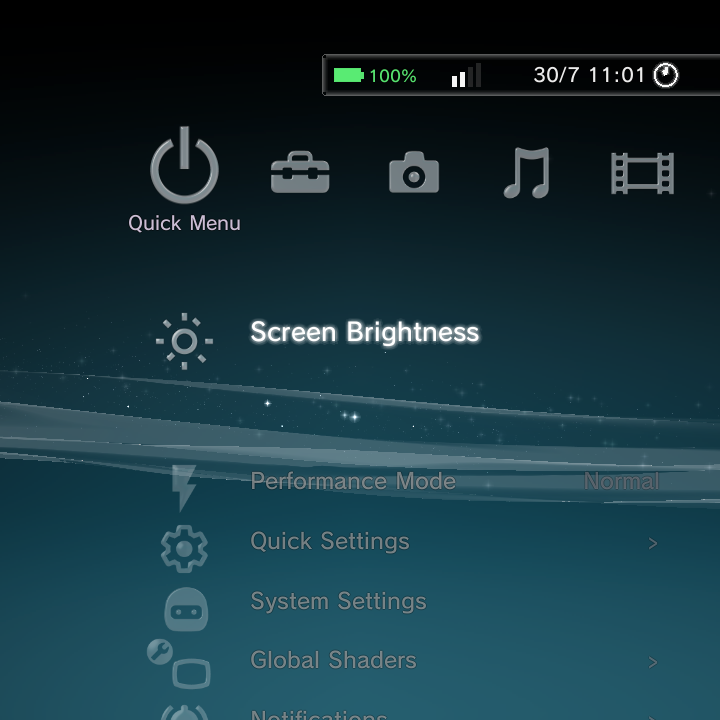
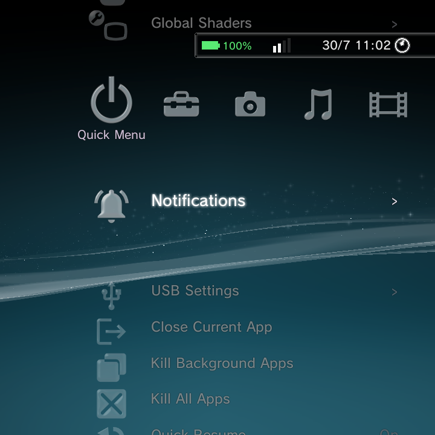

The Quick Menu is your fast lane to the settings you reach for most: brightness, performance mode, shaders, USB mode, and power options. You can open it from the home, and you can raise it right over a running game without quitting.

Opening the Quick Menu
- On the home, the Quick Menu is the far-left category (the power-icon column). Move to it like any other category.
- Over a running game or app, hold Power to raise the Nano overlay, which opens straight on the Quick Menu. Press B or hold Power again to drop back into your game. See the in-game overlay.
- Holding Power on the home jumps directly to the Quick Menu's Power submenu.
What is in it
| Item | What it does |
|---|---|
| Resume Audio Player | Jumps back to the now-playing screen (shown only while music is playing) |
| Screen Brightness | An inline slider; move Left / Right to adjust |
| Performance Mode | Normal, Max Performance, or Power Saver CPU/GPU profile |
| Quick Settings | A page of toggle tiles (see below) |
| System Settings | Opens the full Android Settings app |
| Global Shaders | Turns the system display shader on or off and tunes it (see below) |
| Notifications | Shows active system notifications; dismiss the focused one |
| USB Settings | Switch the USB mode: Charging only, MTP, PTP, or RNDIS (USB Ethernet) |
| Close Current App | Force-stops the foreground app and returns you home |
| Kill Background Apps | Force-stops background apps, sparing the one in front |
| Kill All Apps | Force-stops all third-party apps |
| Screen Orientation | Force an app's orientation (shown only over a running app) |
| Quick Resume | Toggles Quick Resume on or off |
| Power | A submenu: Restart, Power Off, Recovery, Safe Mode, Boot Android |

Performance Mode
Three profiles trade battery for speed:
- Normal scales up and down with load (the everyday default).
- Max Performance holds high clocks for the most demanding games.
- Power Saver keeps clocks low for light emulation and long sessions.
Global Shaders
The Global Shaders item applies a system-wide display shader over everything on screen. Pick a preset and tune it:
- Off turns shaders off.
- CRT adds scanlines (adjust Scanline Size and Scanline Strength).
- LCD3x and LCD emulate an LCD grid.
- Blur Fill fills the empty sides of a non-fullscreen image (with a Resolution and Orientation control).
- Custom Shader loads your own preset, with Resolution Scale and Scanline Density controls.
If a shader ever makes the screen unreadable, hold Power + Select to disable it instantly. See Controls.
Quick Settings tiles
The Quick Settings page is a grid of one-tap toggles, including Wi-Fi, Bluetooth, Performance Mode, Global Shaders, GammaRGB, GammaEQ, Screen Map, Deep Sleep Mode, External as Primary, Immersive Mode, ABXY Swap, D-Pad/Analog Swap, Global Sensitivity, Analog Calibration, and stick inversion. Tap one to flip it.
USB Settings
Switch how the device appears when plugged into a computer:
- Charging only (default): no data connection.
- MTP: browse the device's files as media storage.
- PTP: transfer photos.
- RNDIS: share the device's connection as USB Ethernet.
Where to go next
- Controls for the in-game overlay and system shortcuts.
- Settings Reference for the full Settings tree.
- GammaOS Toolbox for the deeper system tweaks.